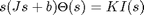
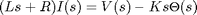
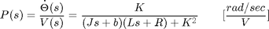
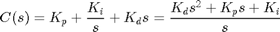
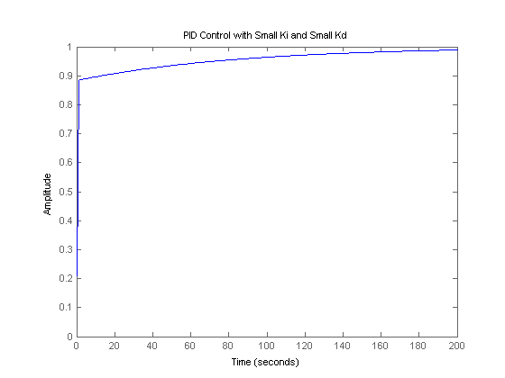
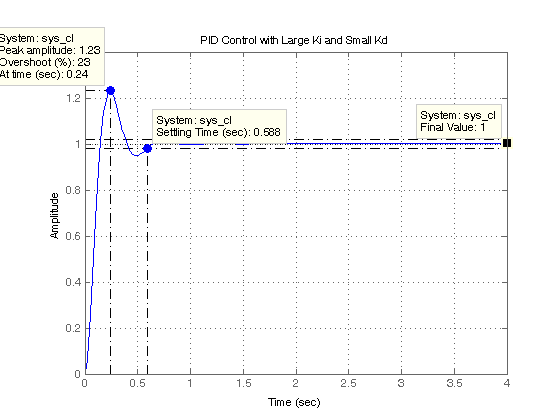
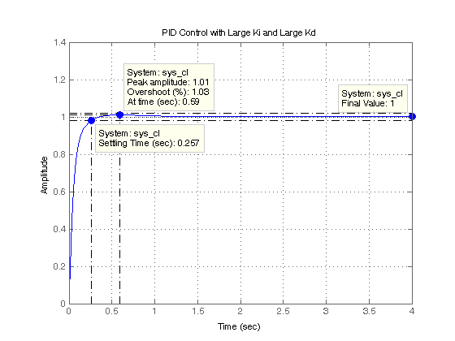

DC Motor Speed: PID Controller Design
Key MATLAB commands used in this tutorial are: tf , step , feedback
Contents
From the main problem, the dynamic equations in the Laplace domain and the open-loop transfer function of the DC Motor are the following.
(1)
(2)
(3)
The structure of the control system has the form shown in the figure below.

For the original problem setup and the derivation of the above equations, please refer to the DC Motor Speed: System Modeling page.
For a 1-rad/sec step reference, the design criteria are the following.
- Settling time less than 2 seconds
- Overshoot less than 5%
- Steady-state error less than 1%
Now let's design a controller using the methods introduced in the Introduction: PID Controller Design page. Create a new m-file and type in the following commands.
J = 0.01;
b = 0.1;
K = 0.01;
R = 1;
L = 0.5;
s = tf('s');
P_motor = K/((J*s+b)*(L*s+R)+K^2);
Recall that the transfer function for a PID controller is:
(4)
Proportional control
Let's first try employing a proportional controller with a gain of 100, that is, C(s) = 100. To determine the closed-loop transfer function, we use the feedback command. Add the following code to the end of your m-file.
Kp = 100; C = pid(Kp); sys_cl = feedback(C*P_motor,1);
Now let's examine the closed-loop step response. Add the following commands to the end of your m-file and run it in the command window. You should generate the plot shown below. You can view some of the system's characteristics by right-clicking on the figure and choosing Characteristics from the resulting menu. In the figure below, annotations have specifically been added for Settling Time, Peak Response, and Steady State.
t = 0:0.01:5;
step(sys_cl,t)
grid
title('Step Response with Proportional Control')

From the plot above we see that both the steady-state error and the overshoot are too large. Recall from the Introduction: PID Controller Design page that increasing the proportional gain Kp will reduce the steady-state error. However, also recall that increasing Kp often results in increased overshoot, therefore, it appears that not all of the design requirements can be met with a simple proportional controller.
This fact can be verified by experimenting with different values of Kp. Specifically, you can employ the SISO Design Tool by entering the command sisotool(P_motor) then opening a closed-loop step response plot from the Analysis Plots tab of the Control and Estimation Tools Manager window. With the Real-Time Update box checked, you can then vary the control gain in the Compensator Editor tab and see the resulting effect on the closed-loop step response. A little experimentation verifies what we anticipated, a proportional controller is insufficient for meeting the given design requirements; derivative and/or integral terms must be added to the controller.
PID control
Recall from the Introduction: PID Controller Design page adding an integral term will eliminate the steady-state error to a step reference and a derivative term will often reduce the overshoot. Let's try a PID controller with small Ki and Kd. Modify your m-file so that the lines defining your control are as follows. Running this new m-file gives you the plot shown below.
Kp = 75;
Ki = 1;
Kd = 1;
C = pid(Kp,Ki,Kd);
sys_cl = feedback(C*P_motor,1);
step(sys_cl,[0:1:200])
title('PID Control with Small Ki and Small Kd')
 Inspection of the above indicates that the steady-state error does indeed go to zero for a step input. However, the time it takes to reach steady-state is far larger than the required settling time of 2 seconds.
Tuning the gains
In this case, the long tail on the step response graph is due to the fact that the integral gain is small and, therefore, it takes a long time for the integral action to build up and eliminate the steady-state error. This process can be sped up by increasing the value of Ki. Go back to your m-file and change Ki to 200 as in the following. Rerun the file and you should get the plot shown below. Again the annotations are added by right-clicking on the figure and choosing Characteristics from the resulting menu.
Kp = 100;
Ki = 200;
Kd = 1;
C = pid(Kp,Ki,Kd);
sys_cl = feedback(C*P_motor,1);
step(sys_cl, 0:0.01:4)
grid
title('PID Control with Large Ki and Small Kd')

As expected, the steady-state error is now eliminated much more quickly than before. However, the large Ki has greatly increased the overshoot. Let's increase Kd in an attempt to reduce the overshoot. Go back to the m-file and change Kd to 10 as shown in the following. Rerun your m-file and the plot shown below should be generated.
Kp = 100;
Ki = 200;
Kd = 10;
C = pid(Kp,Ki,Kd);
sys_cl = feedback(C*P_motor,1);
step(sys_cl, 0:0.01:4)
grid
title('PID Control with Large Ki and Large Kd')

As we had hoped, the increased Kd reduced the resulting overshoot. Now we know that if we use a PID controller with
Kp = 100, Ki = 200, and Kd = 10,
all of our design requirements will be satisfied.